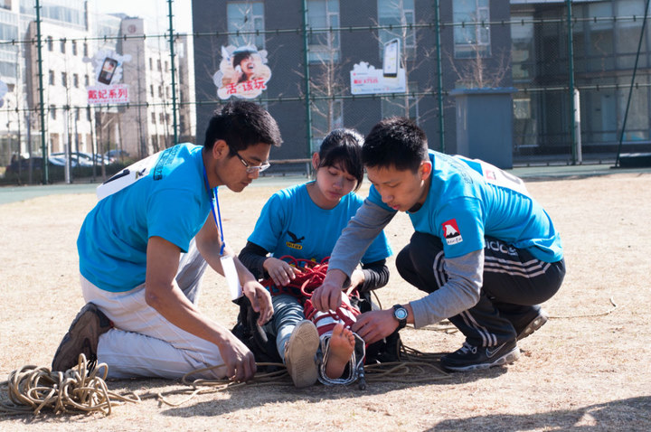

发信人: alexgao (瓢子), 信区: outdoor
标 题: 迟到游记总结2—记北大比赛
发信站: 饮水思源 (2012年06月16日08:17:21 星期六)
北大比赛游记与总结
北大比赛可以说是加入野协以来给我感触最深的一次活动，在回来以后的很长一段时
间都无法释怀那份山鹰社给我的心灵震撼。在此，野协与山鹰无论在数量上还是质量上都
无法同日而语，当然，我们纵然可以说我们社团刚刚起步学校打压上海没有户外环境之类
的屁话，但我想说的是，我们需要向他们借鉴的实在太多太多，而我们一样都没有做，这
就是问题。刚刚忙完期末考试，闲来无事，一直在关注山鹰，频繁的翻看他们的bbs，渐渐
养成那颗存鹰之心，志在高远。
在此不为别的，只为如实记录现如今我眼中的山鹰，以及我的这次北大比赛。
最早把北大比赛提上野协日程是在这学期开学初的野协第一次例会上，那次会印象很
深，实在东中4一楼，来的人很多，那次是max主持的，我记得当时报名北大比赛的人真心
不少，但最后直到两个月后的北大比赛前一个月，这个事情就没有再被提及过，所谓的北
大比赛选拔成了一纸空文，也因此仓促的内定加上短期的突击训练成就了我们三个上马北
大比赛。希望下次明年能够建立完善的训练选拔机制。此外，自我感觉赛前训练在某些方
面针对性不强且跟比赛规则有偏差，所以在比赛中也不同程度的吃亏。但我们的短板是攀
岩，这方面的训练真心不够。
一、前期备赛
印象中离比赛不到一个月，我们开始慢慢进入角色，那一段基本上是每天都有训练，从营
地技巧到模拟救援到爬墙再到攀岩同时还有相应的体能训练，其实把时间分配给每一项就
并没有多少了。但我们的确用心并且尽力了，我们在一次次拆搭帐篷中成长着，在爬墙的
伤痛中进步着。同时，我也要特别感谢野协的内部的核心成员，是他们的不懈支持与监督
才成就了我们的辉煌与荣耀。我想起好多赛前训练的画面，晚上负重校园跑营地救援加翻
墙、南体的20圈耐力训练加营地技巧、岩馆的攀岩、野协的内部定向三人行轻松夺魁，这
一切都在那一个月里悄无声息的发生着。等待着熊熊燃烧的那个时刻。我们当然有所进展
，自创的三人梯、娴熟默契的营地技能、力与美的营地救援成为了那段时光最美好的回忆
。我想，论野协精神势必与夹缝中的顽强密不可分。
二、圆梦北大
未名湖果然如传说中的没有悬念，让北京爷们情何以堪。这是我对北大由来已久的不怎么
好的印象。第一天下午，听说山地定向就在北大附近的百望山，因此一路杀到此地一探究
竟。印象中，我们是很专心致志的看了路标研究了地形，可当我今天回过头看时，其实就
那么回事，效果甚微，也只是聊胜于无。第一晚是在山鹰社岩壁下度过的，山鹰人热情细
致的讲解比赛相关事项，但当参赛选手齐聚一堂的时候还是会感到些许的火药味。那天很
晚才回到宾馆。
第二天早上的开幕式着实令在座的户外同僚们赞叹叫绝，北大的岩壁负角度连攀三次，彰
显山鹰社的强大实力，也为此次比赛拉开了序幕。这一天上午共进行四个项目，对于我们
顺序是营地救援爬墙营地技巧高空技巧下午统一攀岩，几项比赛都算顺利可圈可点，特别
是爬墙的57秒更是引来了全场的欢呼。
screen.width - 200){this.width = screen.width - 200}">
营地救援因为动作太过于太过有力粗暴搬运伤员都跑了起来被罚时一分半，但最好救援的
成绩还是轻松晋级前五名。
 screen.width - 200){this.width = screen.width - 200}">
营地技巧虽说组委会提供的帐篷跟我们协会的T3有些出入，但操作起来还算顺利。爬墙实
属给力，没有出什么差错，三人体迅速成形，陆希先上，我再上，发现平台上承重点拴着
一把主锁，索性把线路绳从锁中传出连绳结都不打，直接让刚哥双绳上，时间节省了不少
。以后的爬墙小朋友们还要苦练三人梯，破我们57s的记录。然而上午最后一项的高空技巧
（上横木）就只能用表现平平来形容，也加上我们在交大没有练习场地配合不太连贯，成
绩在所有队伍中处于中等水平。而对于攀岩来说真是我永远的痛，我们安排刚哥抱石陆希
难度A我难度B，刚哥比较给力，在所有选手中抱石排名第二，就做好的大动态没有抓到，
陆希也还好，A线上到20多，我的B线就只有悲催的7-，
screen.width - 200){this.width = screen.width - 200}">
连最开始的小屋檐都没有上去就掉了下来，以后要多加练习攀岩。最后看来，攀岩的确是
我们协会的一块短板，是我们与北大地大差距最明显的地方，以后的攀岩训练应该受到足
够的重视。
第二天安排很紧凑，攀岩结束就六点多了，草草吃过晚饭，傍晚山鹰还为各户外协会提供
了一个学习交流的平台，会长沙龙让各协会互相交流熟悉了一番。此次也了解到了一些北
大的管理模式与运营机制，相比来说十分成熟，他们没有会员干事制，而是由各部长分别
联系管理，每周末都有例行的户外线，装备食品户外服装都统一购买统一发放，杜绝腐败
。带线分工较野协更加细化明确，传承性很强。这些会在下学期我作为技术部副部长以及
登山队队长的工作计划中有所汲取补充。
散会后，步行横穿北大，走过未名湖畔，静谧的夜只留下明月在波光粼粼的水面上的倒影
，博雅塔隐没入背景，但仍感受到它的底气。我怎么也未曾料到一个北京人初识北大竟然
是在那样的夜。现如今我想北京更多了北大的夜。
北大的西门烤翅一如既往，左手西门鸡翅右手燕京纯生，我心荡漾。
第三天上午的山地定向同样是重头，一大早重回百望山，一队队每隔三分钟一出发，拿上
标有密密麻麻黑线的地图，我不认识它，它不认识我，管他娘的东南西北，照着前队出发
的方向就是一阵狂飙，所幸碰到了10号点，算运气，趁着打点，定好位，我们开始逐渐进
入状态，后几个点虽说费了番周折，但也总算找到，再后来的最后五个点我们状态有点乱
，跟着其他组狂跑了一阵也找不出所处方位，真是痛苦至极，五米的等高线间隔虽说十分
详细，但大尺度与小尺度的视觉差别真心是肉眼很难捕捉与转换的，像什么峡谷山坳鞍部
之类的地形在等高线图上的表现没有想象中的明显，最有效的办法还是看山体的走势，还
在最后都放慢了节奏，三个人凑在一起想办法定位，总算把后几个点给找了来，最后虽说
放弃了两个比较远的点，但其他点全部找齐，还算明智，最后定向成绩也不错，在此得益
于刚哥在此方面的经验与给力发挥。
下午安排比较闲散，约地大的二狗吃过饭，参加北大比赛的闭幕式，上台领完奖，懒散的
回宾馆领完东西，又懒散的回到岩壁合影留念，
screen.width - 200){this.width = screen.width - 200}">
screen.width - 200){this.width = screen.width - 200}">
screen.width - 200){this.width = screen.width - 200}">
懒散的离开。不舍的告别北大，告别山鹰，那是傍晚五点多的晴天，夕阳撩人的撒，风温
情的吹，博雅塔下未名湖畔依旧是端着相机的人们。我们无意闲谈，静静的离开。
三、赛后
这一段不晓得该写啥，就随便让心绪四溢吧，山鹰的户外大赛着实令我难忘，难忘于他们
沙乐华财大气粗的赞助、巍峨高耸的给力岩壁、山鹰人的热情好客、山鹰至死不渝的“存
鹰之心，志在高远”。
愿山鹰的辉煌能由我们汲取与发扬，愿山鹰不再孤飞于天际。
--
※ 来源:·饮水思源 bbs.sjtu.edu.cn·[FROM: 59.78.8.150]
|